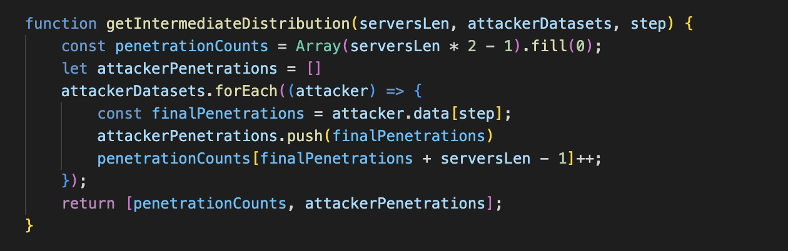

Euler–Maruyama simulator refinement
Refine you Euler–Maruyama simulator to approximate numerical solutions of stochastic differential
equations (SDE), by adding the following variants to the existing framework:
Refine you Euler–Maruyama simulator to approximate numerical solutions of stochastic differential
equations (SDE), by adding the following variants to the existing framework:
In the first homework, the addFirstChart() function generates the first chart, while
addSecondChart() handles the second one.
In this homework, a new function, addThirdChart(), is introduced to illustrate how many attackers
successfully penetrate a certain number of servers at an intermediate step.
Additionally, addFourthChart() is implemented to represent both Absolute and Relative Frequency.
The x-axis denotes the number of servers, while the y-axis shows:
This function simulates the attack process with minor modifications from the first homework.
Each attacker's attempt to penetrate a list of servers is simulated, and the number of successful penetrations is
calculated. For each server, a random number between 0 and 1 is generated using Math.random(). If this
value is below the user-defined probability of success, the attacker successfully penetrates the server (+1).
Otherwise, the attempt fails (-1).
The results are stored in a dataset, where each attacker's progress is tracked. Additionally:

Similar to the first homework, this function recursively computes the average number of servers penetrated by all
attackers. The step-by-step update follows the formula:
\[ \mu_n = \mu_{n-1} + \frac{x_n - \mu_{n-1}}{n} \]
In this homework, the function has been extended to calculate variance using the formula:
\[ M_n = M_{n-1} + (x_n - \mu_n)(x_n - \mu_{n-1}) \]
This function determines how many attackers successfully penetrate a specific number of servers at an intermediate step. It also tracks the number of successful and failed penetration attempts per attacker, which is then used to compute mean and variance.
